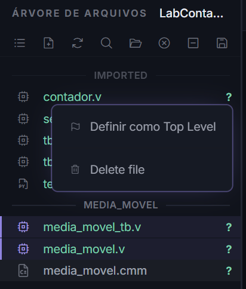
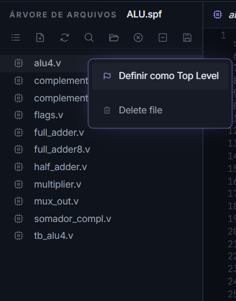
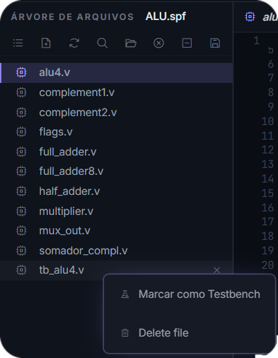

Organização de um projeto¶
Um projeto é uma pasta no disco governada por um arquivo .spf (SAPHO Project File). Tudo o que a AURORA sabe sobre o projeto está nele: quais arquivos participam, qual é o Top Level, qual é o Testbench Top e quais processadores existem.
A pasta¶
Um projeto que já tem um processador e alguns fontes Verilog fica assim:
MeuProjeto/
├── MeuProjeto.spf o arquivo do projeto
├── contador.v fonte Verilog importado
├── tb_contador.v testbench importado
├── media_movel/ um processador SAPHO
│ ├── Software/ o que você escreve
│ │ ├── media_movel.cmm
│ │ └── media_movel.asm gerado na compilação
│ ├── Hardware/ o que o YANC gera
│ │ ├── media_movel.v
│ │ ├── media_movel_inst.mif
│ │ └── media_movel_data.mif
│ └── Simulation/ estímulos e resultados
│ ├── media_movel_tb.v
│ ├── input_0.txt
│ └── output_0.txt
├── testbench/ estado de ondas por testbench
└── Backup/ zips gerados pelo botão de backup
O projeto nasce só com o .spf. As pastas de processador aparecem quando você cria um processador no Hub; as demais, conforme o uso.
Em desenho, o caminho de um arquivo até o hardware:
flowchart TB
subgraph P["MeuProjeto/"]
SPF["MeuProjeto.spf<br><i>quem é top level, quem é testbench</i>"]
V["contador.v, tb_contador.v<br><i>Verilog escrito à mão</i>"]
subgraph PROC["media_movel/ (um processador)"]
direction LR
SW["Software/<br><b>você escreve</b><br>.cmm, .asm"]
HW["Hardware/<br><b>YANC gera</b><br>.v, .mif"]
SIM["Simulation/<br><b>bancada</b><br>testbench, entradas, saídas"]
SW -->|compilar| HW
HW -->|simular| SIM
end
end
SPF -.governa.- PROC
SPF -.governa.- V
Aviso
Escolha bem o caminho da pasta. As ferramentas de linha de comando que rodam por baixo (compiladores, Icarus, Verilator, Yosys) recebem esse caminho como argumento, e várias delas engasgam com acentos, espaços duplos, cedilha, #, &, % ou parênteses. O sintoma é ruim de diagnosticar: um erro estranho de arquivo não encontrado, vindo de uma etapa que não tem nada a ver com o seu código.
Use letras sem acento, números, hífen e sublinhado. C:\Projetos\meu_filtro está bom; C:\Meus Projetos (2026)\Simulação #1 não. Vale para o nome do projeto, para o nome do processador e para toda a árvore de pastas acima deles, inclusive o nome de usuário do Windows.
O arquivo .spf¶
É um JSON legível. Guarda o nome e o caminho base do projeto, a lista de processadores com suas configurações de simulação, as listas de fontes sintetizáveis e de testbenches, e os dois ponteiros centrais: topLevelFile e testbenchFile. Caminhos dentro do projeto são gravados relativos, então o projeto pode ser movido ou copiado de máquina para máquina sem quebrar.
Dica
O .spf abre no editor como JSON com realce. Ler o seu é uma boa forma de entender o que a AURORA registra. Editar à mão raramente é necessário; a interface cuida dele.
Aviso
Os parâmetros de arquitetura do processador (largura de bits, mantissa, portas) não ficam no .spf. Eles vivem nas diretivas no topo do arquivo .cmm, que é a fonte da verdade: editar uma diretiva muda o processador na próxima compilação. No .spf ficam apenas as preferências de simulação de cada processador (clock, número de ciclos).
Sintetizável ou testbench: quem decide é o conteúdo¶
Ao importar um .v, a AURORA o classifica sozinha lendo o conteúdo: sinais típicos de testbench (gravação de onda, $finish, módulo sem portas, blocos initial, atrasos #, nome terminando em _tb) somam pontos; passando do limiar, o arquivo é testbench, senão é sintetizável. Arquivos .py são sempre testbenches cocotb. A classificação se refaz a cada atualização da árvore, então um arquivo editado pode mudar de categoria sozinho.
O que a classificação não escolhe é o papel de raiz, e isso é seu:
{kind=link}

Figura 26 O menu de contexto de um .v sintetizável na visão Arquivos.¶
- Top Level
O módulo raiz do circuito sintetizável. Define de onde a elaboração parte e o que o PRISM desenha. Marque pelo menu de contexto do arquivo na visão Arquivos: Definir como Top Level.
- Testbench Top
O arquivo que comanda a simulação,
.vou.py. Define o que roda quando você clica em Analisar Verilog. Marque por Marcar como Testbench.
Top Level  |
Testbench Top  |
{kind=link}
{kind=link}
Os dois papéis são exclusivos: marcar um arquivo desmarca o anterior. A barra de status mostra os dois o tempo todo.
Importar e criar arquivos¶
Arraste arquivos .v, .sv, .vh ou .py de fora para a árvore, ou use o menu de contexto da área vazia: Novo arquivo, Novo testbench cocotb (.py), Novo .gitignore. Na visão Pastas, o menu de contexto oferece o conjunto completo de operações de disco, com lixeira e desfazer.
Backup¶
O botão de backup no cabeçalho da árvore gera Backup/<projeto>_<data>.zip com tudo, exceto os backups anteriores. É a forma rápida de congelar um estado antes de uma mudança grande. Para histórico de verdade, o painel de controle de versão está em Controle de versão, Python e configurações.
Pronto para trabalhar. A Parte II começa criando um projeto Verilog do zero: Tutorial: um contador em Verilog.